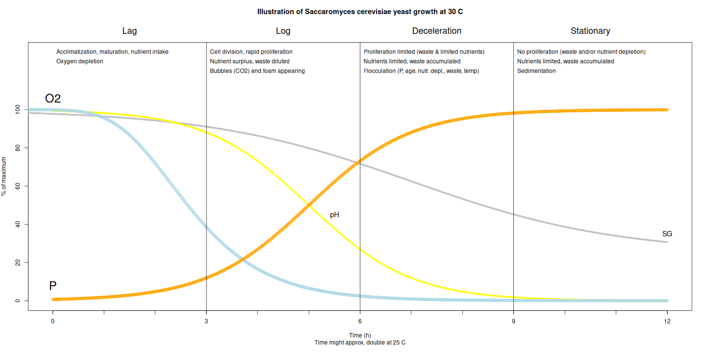

## u = u_max * (s/(kS+s))
## u : Growth rate of microorganism
## u_max : Maximum growth rate. Empirical. Varies depending on organism, pH, temp, and medium etc.
## s : Concentration of limiting substrate
## Ks : Half-velocity constant, ie value of s when u/u_max = 0.5
## rS = uX/Y
## rS = Rate of substrate utilization. Negative by convention
## X total biomass (u is normalized to total biomass)
## Y yield coefficient
## In some applications, several terms of the form [S] / (Ks + [S]) are multiplied together where more than one nutrient or growth factor has the potential to be limiting.
## As with the Michaelis–Menten equation graphical methods may be used to fit the coefficients of the Monod equation, See ref wiki.
## Ref: https://en.wikipedia.org/wiki/Monod_equation8 Jäst
8.1 Jästens biologi
Figur 8.1 visar jästens tillväxtfaser och resulterande förändringar av syrgas, sockerhalt (SG), och pH i musten. P är jästpopulationen.

maximum yeast growth and metabolism occurring between 20 and 25C. [Merwin2007?]
Biprodukter, metabolism, tillväxt: https://pmc.ncbi.nlm.nih.gov/articles/PMC10034642/ Se figur och referenser.
“Crabtree-positive”
“Under aerobic conditions, the alcoholic fermentation process occurs when the glucose concentration exceeds 0.10–0.15 g/L
“Even under aerobic conditions, the anaerobic metabolic pathway can also be activated when the rate of biological oxygen uptake exceeds the rate of oxygen supply, which is identifiable by the production of glycerol. In the absence of molecular oxygen, S. cerevisiae carries out the anaerobic fermentation process, producing glycerol”
“Several mechanistic yeast models have been developed using the typical Monod-type expression (𝑆/(𝐾+𝑆)). This mathematical expression considers the limiting substrates as glucose, nitrogen and oxygen. Glucose is particularly important to Saccharomyces cerevisiae, as it is by far the yeast’s preferred carbon source. Yeast cells can sense glucose and utilize it efficiently over a broad range of concentrations, from a few micromolars to even a few molars [9]. Nitrogen is also an essential element in S. cerevisiae’s composition, since it is mandatory for protein synthesis and represents 9% (w/w) of yeast biomass [10].” https://www.mdpi.com/2311-5637/8/12/710#
“Oxygen is required to regenerate the NAD+ used in the glycolytic pathway of biomass formation, closing the redox balance for the co-enzyme system NAD+/NADH. The oxidation of cytosolic NADH into NAD+ can occur through mitochondrial respiration with external NADH dehydrogenase [8,11]. Oxygen is also important for the synthesis of yeast membrane compounds (sterols and unsaturated fatty acids) [12], though this process could be neglected since the required amount is very weak, between 0.3 and 1.5 mgO2 gDW−1”
“High contents of saccharides in fermentation medium cause an increase in the osmotic pressure, which has a detrimental effect on yeast cells.”
“For S. cerevisiae in aerobic conditions,[8] glucose concentrations below 150 mg/L did not result in ethanol production. Above this value, ethanol was formed with rates increasing up to a glucose concentration of 1000 mg/L. Thus, above 150 mg/L glucose the organism exhibited a Crabtree effect.[9]”
8.2 Modeling yeast
To relate microbial growth rates in an aqueous environment to the concentration of a limiting nutrient, Monod equation: https://en.wikipedia.org/wiki/Monod_equation
8.3 Pitching
8.4 Hydrering
8.5 Jästsorter
Yeast: S. cerevisiae strain EC1118, robust fermenter, and aromatically ‘neutral’ strain “Lalvin EC-1118 is the original ‘prise de mousse’. It was isolated in Champagne and its use is validated by the Comité Interprofessionnel du Vin de Champagne (CIVC). Its strong competitive character, its ability to ferment at low temperature, good flocculation and excellent alcohol tolerance, make Lalvin EC-1118 an excellent strain to be used in a wide range of applications (such as sparkling wines, fruit wines and ciders).Alcohol tolerance: 18 % Optimum fermentation temperature: 10–30 °C”
8.6 Effekter av jäsning
“Bottle Conditioned Cider Guide Alex Simmens, Llanblethian Orchards [1] 2. Fermentation and production of CO2: During fermentation yeast converts sugar to alcohol and CO2 as well as other metabolic products and new yeast cells. Pasteur studied it and produced the following relation: 100 grams of sugar yields:
- 48.6g ethanol
- 46.6g carbon dioxide
- 3.2g glycerin
- 0.6g succinic acid
- 1.2g yeast cells
Later studies showed 48g ethanol and 47g CO2 per 100g sugar to be a more correct figure”
8.7 Resurser
Thesis: Systems biology of yeast metabolism: https://research.chalmers.se/publication/525069/file/525069_Fulltext.pdf
Se [[https://www.amazon.com/Yeast-Practical-Fermentation-Brewing-Elements/dp/0937381969][Practical fermentation]]
Yeast Quick reference chart (egenskaper) : https://admin.lallemandwine.com/wp-content/uploads/2017/12/Quick-Yeast-References-Chart_2018_LR.pdf
Yeast comparison, acid reduction: https://groups.google.com/g/cider-workshop/c/JCNfHQfkMlA 71B reduced acid by 20-30%
” In practice it’s quite a bit more complicated than that. If you want to know more, check out Linda Bisson’s work at UC Davis. Her lecture notes on yeast and sulphur taints can be found online.”
By the way, would you be aware of a study on the rate of YAN use through > the fermentation - we know most of it is used in the beginning to build > the yeast population, but would all of it be used then, or would there > be some left and used during the later stages of the fermentation. I > wish I had a graph showing the yeast population, YAN amount, and sugar > content plotted against the time for a typical slow cider fermentation…
Such a study was done by Challinor and Burroughs over 60 years ago and was reported in the Long Ashton Annual Report for 1948. It was also described in this review paper by Challinor in 1955 http://onlinelibrary.wiley.com/doi/10.1111/j.1365-2672.1955.tb02079.x/abstract [2]
Claude, fermentation model for cider: www.chelseagreen.com/model
| Name | T range | T optimum | Time | SG | Headspace | Note |
|---|---|---|---|---|---|---|
| Yeast quantity | 0.2-0.4 g/L. Too little gives more cell division which may produce off flavors (really?) | |||||
| Pre-culture* | 28 | 20 min | Start up the yeast in water and sugar. Why? | |||
| Hydration | 28 | 20 min | Why? | |||
| Growth | 12-25 | 20 | 1-2 d | 40-60 | Oxygen access benifical. Yeast multiplies logarithmically and visible CO2 bubbles appear. | |
| Fermentation | 12-20 | 20 | (3-)6-12 w | 10-20% | Starts when oxygen is depleted. Loose lid until foaming subsides. Then use airlock. | |
| Flocculation | ||||||
| Sedimanetation | ||||||
| Autolysis |
Rationale: Older yeast cells are larger and have an increased tendency to flocculate (and then sediment). Therefore, racking will reduce the proportion of older yeast cells compared with middle-aged and younger ones (“age selection”). Virgin cells are slower to begin utilizing sugar.
Yeast cell age and fermentation: https://academic.oup.com/femsyr/article/3/2/149/590373, “Individual cells of the yeast Saccharomyces cerevisiae exhibit a finite replicative lifespan, which is widely believed to be a function of the number of divisions undertaken. As a consequence of ageing, yeast cells undergo constant modifications in terms of physiology, morphology and gene expression. Such characteristics play an important role in the performance of yeast during alcoholic beverage production, influencing sugar uptake, alcohol and flavour production and also the flocculation properties of the yeast strain.”
Growth phase: 1-3 doublings typical in industrial settings. Flavor, alcohol, CO2 and heat is produced.
“When cultured for the fermentation of beer, yeast cells in culture follow a predictable pattern of growth that can easily be divided into four phases: (1) lag; (2) log; (3) deceleration; and (4) stationary. During the lag phase, no growth occurs as newly pitched yeast mature and acclimate to the environment. This is followed by the log phase, where cells are rapidly growing and dividing. Nutrients are in excess relative to cell number and waste is being sufficiently diluted as to be insignificant. The growth rate in this phase will follow first order kinetics. As cell numbers increase, cell growth begins to slow as various parameters (e.g., substrate and waste), each with saturation effects, become significant. Eventually the yeast cells reach the stationary phase, where no growth occurs due to high waste concentration or complete substrate consumption” https://www.agilent.com/cs/library/applications/monitoring-growth-of-saccharomyces-cerevisiae-5994-3284EN-agilent.pdf
“Two types of brewing yeast were originally classified based on flocculation behaviour: top fermenting (ale and weiss yeast) (Jentsch et al., 2007) and bottom fermenting (lager yeast). Their behaviour is so distinct that the two main classes of beer types (ales and lagers) are based on the two yeast types.” https://academic.oup.com/femsyr/article/8/7/1018/491220. “serial repitching and cropping result in the deterioration of the yeast. This deterioration could be hygiene related (cross-contamination with other brewing cultures, wild yeast or bacteria), selection of crops with specific characteristics (trub enriched, increased flocculance, age and cell size) and yeast quality related (genetic changes, petite mutants and physiological changes due to stress)”
Oxygen curves and more: https://beerandbrewing.com/identifying-issues-with-your-yeast-a-look-at-fermentation-data-curves/
Flocculation:
“Flocculation refers to the ability of yeast to aggregate and form large flocs and then drop out of suspension. The definition of flocculation is, “reversible, asexual, and calcium-dependent process by which cells adhere to form flocs. Ideally, yeast will stay non-flocculent and in suspension until the desired final gravity is reached and then become flocculent and drop out of solution.”” https://wyeastlab.com/resource/professional-clarification-flocculation/
Life of brewers yeast curve: https://www.whitelabs.com/news-update-detail?id=37
Sugar consumption modeling: https://www.researchgate.net/figure/Sugar-concentration-and-fermentation-rate-calculated-by-taking-the-1st-derivative-of-the_fig3_350353318
Generation time (2.5 h at 20C, 1h at 30C) and lag phase (6h at 20C, 3h at 25C, flat thereafter) dependent on temp: https://onlinelibrary.wiley.com/doi/pdf/10.1002/j.2050-0416.1966.tb02977.x
8.8 Jästsorter
Olika jästsorter har olika egenskaper, till exempel i fråga om vilken alkoholhalt de tål, vilken temperatur de jäser i, hur mycket de omvandlar citrat till laktat, och i vilken mån de konkurrerar ut annan jäst.
För must med hög syrlighet kan malatreducerande jäst (tex 71B) vara önskvärt, emedan det vid jäsning av päronmust kan vara en nackdel, då syranivån i allmänhet är lägre och man vill undvika senare malolaktisk järning (som då gynnas ifall pH stiger ytterligare).
Vill man undvika malolaktisk jäsning kan det vara en fördel med en jäst som producerar en de SO2, tex EC1118 (måttlig produktion).
“If you are planning a malolactic fermentation, do NOT use EC 1118. EC-1118 produces SO2 that can interfere with a malolactic fermentation.”
Olika jäst: https://pricklycider.com/2023/09/23/cider-question-what-is-the-best-yeast-to-use-for-making-cider/
Jästsorter och effekt på smak: https://www.northernbrewer.com/blogs/wine-cider-and-mead-making/exploring-diversity-of-cider-profiles-through-the-selection-of-new-yeast-strains?srsltid=AfmBOopHWuwDKU-i5OtuuqUXOqe2ja88KJSO5AJOiHW0GzAKmm9uaP2u
8.9 Dosering av jäst
https://llancider.wales/wp-content/uploads/2018/09/Bottle-Conditioning-guide.pdf
A packet of Lalvin EC-1118 is 5g in weight - Each gramme of dry yeast contains 20 billion yeast cells, not all of which will be active. - 6 billion active yeast cells per gramme is a good minimum estimate. - If the yeast is not rehydrated as per the packet before use half the active cells will die. - After rehydrating for 15 mins use within 30 mins. - Use tap water not distilled or deionised water to rehydrate else some cells will die. - After two years you would expect only a 10% drop in active cell count in the packet
From the earlier facts we can deduce an equation to calculate the number of active yeast cells in any quantity of dry yeast after rehydration as follows: - Viable cell count = grammes dry yeast * 6 billion. - i.e. Lalvin EC-1118 5g packet = 5g * 6 billion = 30 billion viable cells per packet. If we rehydrate a yeast of known quantity in a known quantity of water we can calculate viable cell count per ml of starter as in the below equation: - Viable cells per ml starter = (grammes dry yeast * 6 billion) / ml water - i.e. 5g lalvin EC-1118 in 100ml water = (5 * 6 billion) / 100ml = 300 milion viable cells/ml
Cider ~100,000 cells/ml
#+begin_src R :session :exports none
m n_cells_giga n_cells_active_giga litres_cider_start
[1,] 1 20 6 6
[2,] 2 40 12 12
[3,] 3 60 18 18
[4,] 4 80 24 24
[5,] 5 100 30 30
[6,] 6 120 36 36
[7,] 7 140 42 42
[8,] 8 160 48 48
[9,] 9 180 54 54
[10,] 10 200 60 60
litres_cider_conditioning g_nitrogen g_dap
[1,] 60 0.1 0.5
[2,] 120 0.2 1.0
[3,] 180 0.3 1.5
[4,] 240 0.4 2.0
[5,] 300 0.5 2.5
[6,] 360 0.6 3.0
[7,] 420 0.7 3.5
[8,] 480 0.8 4.0
[9,] 540 0.9 4.5
[10,] 600 1.0 5.0FWIW, when I was at Long Ashton back in the 1970’s, our standard pitching rate for both cider and white grape wine was to achieve 5 * 10^6 cells / ml in the sulphited juice. Independent of pH, TA and SG. https://groups.google.com/g/cider-workshop/c/B7rIRb_0aas
if the juice contains 100 ppm of YAN (or 0.1 g/L), this amount of nutrients will permit building 1 g/L of yeast biomass. Add to this the pitched rate or 0.25 g/L, and you get a maximum total biomass of 1.25 g/L, corresponding to approximately 20 to 25 million cells per mL.
+end_src
+RESULTS: | 1 | 20 | 6 | 6 | 60 | 0.1 | 0.5 | | 2 | 40 | 12 | 12 | 120 | 0.2 | 1 | | 3 | 60 | 18 | 18 | 180 | 0.3 | 1.5 | | 4 | 80 | 24 | 24 | 240 | 0.4 | 2 | | 5 | 100 | 30 | 30 | 300 | 0.5 | 2.5 | | 6 | 120 | 36 | 36 | 360 | 0.6 | 3 | | 7 | 140 | 42 | 42 | 420 | 0.7 | 3.5 | | 8 | 160 | 48 | 48 | 480 | 0.8 | 4 | | 9 | 180 | 54 | 54 | 540 | 0.9 | 4.5 | | 10 | 200 | 60 | 60 | 600 | 1 | 5 |
Yeast quick reference chart:
https://admin.lallemandwine.com/wp-content/uploads/2017/12/Quick-Yeast-References-Chart_2018_LR.pdf
*** Lalvin 71B, Cervisiae
Saccharomyces cerevisiae var. cerevisiae
rehydrerades i fingervarmt vatten 20 min, 1g för 4L = 0.25 ml/L. 1 ml jäst till 3L funkade bra.
Lalvin 71B, 5 g “En vinjäst från Lalvin (Lallemand). Denna stam av Sacharomyces cerevisiae har isolerats i Narbonne av Institut National de Recherche en Agriculture (INRA). Utvald för att gynna en fruktig karaktär. Hette förut “Lalvin 71B-1122”. Rekommenderas allmänt för unga vita och röda viner, även vin nouveau. Ger mycket estrar och högre alkoholer men låga mängder fenoler, vilket passar för viner som ska drickas unga.
Alkoholtolerans: 14 % Jästemperatur: 15 - 30 °C Tillverkare: Lallemand”
Short lag phase and moderately vigorous fermentation Low relative nitrogen demand (under controlled laboratory conditions) Low H2S production Alcohol tolerance 14% v/v (depending on fermentation conditions) Low SO2 production High relative glycerol production Fermentation temperature: 15 - 30 °C (59 - 86 °F) Competitive killer factor: no, Lalvin 71B™ is a sensitive strain Malolactic-bacteria compatibility: very high Malic acid consumption: high Medium foam producer MICROBIOLOGICAL PROPERTIES
USAGE DOSAGE RATE: 0.2 - 0.4g/L 1. Rehydrate the yeast in 50ml of water, at a temperature between 35 - 37°C (95 - 99°F). 2. Dissolve by gently stirring and wait for 20 minutes. 3. Add the must. The difference in temperature between the must to be inoculated and the rehydration medium should not be higher than 10°C (if necessary, acclimatize the temperature of the medium by slowly adding must). 4. The total rehydration time should not exceed 45 minutes. 5. It is crucial that a clean container is used to rehydrate the yeast. 6. Rehydration in must is not recommended
The yeast will rapidly lose activity after exposure to air.
It is recommended to store Lalvin 71B™ yeast in dry conditions, between 4 and 15°C, for optimal viability and product performance.
Fruity and “Nouveau” styles
*** EC 1118
https://shop.humle.se/shop/11011/files/Lallemand/Lalvin-EC-1118.pdf?_gl=11u2bznu_up*MQ..&gclid=CjwKCAjwmaO4BhAhEiwA5p4YL0JXi5_xoRcefU6GNuVRRRAtnNd5h4RZjZWtkNfOkOlICJLZIR1IQBoCqgQQAvD_BwE Se figur med kinetik etc
The EC-1118 yeast has been isolated in Champagne and its use is validated by the Comité Interprofessionnel du Vin de Champagne (CIVC). Its strong competitive character, its ability to ferment at low temperature, good flocculation and excellent alcohol tolerance, make the EC-1118 an excellent strain to be used in a wide range of applications (such as sparkling wines, fruit wines and ciders).
Saccharomyces cerevisiae bayanus Competitive factor High alcohol tolerance up to 18% Short lag phase Fast fermentation rate in a wide pH range Wide range of temperatures for fermentation including low temperatures (Optimal between 15°C to 25°C) Low requirement in assimilable nitrogen Low O2 requirement (especially at low T°) Low to average production of volatile acidity Average SO2 production Low H2 S production Low foam formation
Dosage:
White, red and rosé winemaking: 25 to 40 g/hl Secondary bottle fermentation 50g/hl To restart stuck fermentation 40g/hl Note: dosage range is based on the must sugar content and sanitary state of the grapes and winery
Rehydration:
Rehydrate EC-1118 in 5 times its weight of potable water at 40°C. Let stand for at least 20 minutes then gently stir occasionally to break up any clumps. Add to the must. - THE TOTAL REHYDRATION DURATION SHOULD NEVER EXCEED 45 MINUTES - AVOID COLD SHOCKING THE YEAST. THE TEMPERATURE DROP BETWEEN THE MUST TO BE INOCULATED AND THE REHYDRATION MEDIUM SHOULD NEVER BE >10°C (if any doubt, please contact your supplier or Lallemand) - IT IS ESSENTIAL TO REHYDRATE THE YEAST IN A CLEAN CONTAINER. - INITIAL REHYDRATION IN MUST IS NOT ADVISABLE.
*** SafCider TF-6
Very high aromatic intensity and complexity towards fresh fruity notes (apple, banana-pear, red, citrus and exotic fruits) combined with interesting elaborated fruit notes (applesauce).
Sweet and round mouthfeel strengthening candy like sensation.
Please note that those observations are based on French cider recipe trials.
Dosage/Temperature
– 20 to 40 g/hl for first fermentation
– Broad fermentation temperature spectrum: 10-30°C (50-86°F). Usage
For sweet ciders from fresh apple juices.
Regular slow kinetic Broad fermentation temperature spectrum: 10-30°C (50-86°F), ideally 15-25°C (59-77°F) High nitrogen requirements: Ratio YAN**(mg/L)/Sugar(g/L) >0.9 Medium assimilation of fructose Maximum initial SO2 level recommended: 50mg/L. Very low production of acetaldehyde and SO2. High malic acid consumption (up to 1.4g/L) Medium 2-phenylethanol and very high isoamyl acetate (candy-banana) producer
Rehydration procedure:
Direct inoculation:
Pour the yeast on the surface at least 10 times their weight of must (possibly directly on the top of the tank or during tank filling after clarification). Gently stir to avoid or break clumps. Immediately transfer into the tank via a pumping over with aeration (or homogenize tank volume).
With prior rehydration:
Pour the yeast on the surface of 10 times their weight of tap water at room temperature. Gently stir to avoid or break clumps. Wait for 20 minutes and transfer into the tank via a pumping over with aeration.
** Jästnäring
Näring: Tiamin (upp till 0.2 mg/L), ammoniumsulfat/fosfat (upp till 300 mg/L)
DAP:
1 tsk ca 3g Dosering 0.125-0.19 g/L
Fermaid O:
Fermaid O contains approximately 6,5 % N (nitrogen). The normal dosage is 3 - 4 gram per 10 liters. For optimal results, add half the dosage immediately after having added the yeast, and the remainder after 1/3 to 1/2 of the fermentation process.
Nitrogen is the main element here. When yeast population grows, available nitrogen is used by the yeast. N is roughly 20% of DAP and 10% of dry yeast in weight. For example, if you have 100 grams of dry yeast biomass, 10 of these grams are N and have been taken from the available nutrients. Similarly, adding 50 grams of DAP can provide an increase of yeast biomass of 100 grams. So when the yeast population is established, there is no more available nutrients left - all has been used to grow the population. When yeast cells die, there is an autolysis and the N is gradually released back to the cider, it will be reused for feeding the yeast population.”
** Omstart av jäsningen
För att omstarta jäsningen: Addera tiamin och sedan om det behövs (provjäs först) diammoniumsulfat. Ev tillsätt mkt litet jäst.
** Förkultur och återvinning av jäst
Görs oftast inte.
8.10 Vildjäsning
Spontanjäsning: “Spontaneous fermentation begins within a few hours if the temperature of the must rises above 10 °C. This process is usually slow requiring at least 2–3 weeks for the main fermentation and several months for the maturation. Maturation takes place in wooden, polyester or stainless-steel casks at a controlled temperature of 3 °C–12 °C. The entire process can take from 1–6 months depending on the country.”